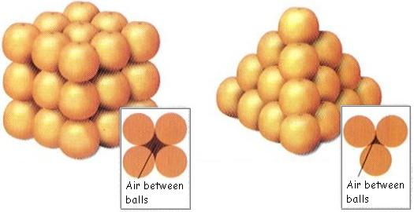

All about data
Data-driven Decision-making
Outline
Data sources
Data formats
Data types
Data structures
Data systems
Data source
A data source is the origin of data, the location where information is stored and can be accessed for use. It can be anything from a database, a spreadsheet, a file, or even a live data feed.
Data source: research
In research, data sources are the places where information is obtained. They can be anything from original data collected through experiments or surveys to existing data from books, articles, or online databases.
Data source: Primary vs Secondary
Primary - These are the original sources of information, often collected firsthand by the researcher. Examples include surveys, interviews, observations, and experiments.
Secondary - These are sources that are based on or derived from primary sources. They can include books, articles, reports, and online databases.
Examples of data sources
Exercise: Think about your current role in relation to the data that you work on and list out ALL your sources of data.
Data format
Data formats are methods to encode data that adhere to generally accepted specifications or standards.
These methods to encode are standardized set of rules that determine how data is stored, organized, and transmitted.
Data format: importance
The data format usually provides us with an indication of whether or not two sets of data are interoperable.
General rule is that data of the same format usually means they can be handled and used with the same tools and with the same techniques.
This is because they follow the same rules and methods to encode data.
Data type
Define the kind of data a variable or object can store and the operations that can be performed on it. They are fundamental building blocks in programming and data analysis.
Refers to the set of data representations in use by a particular processor (usually a computer), which all compiled computer programs must use.
Data type: importance
Data type gives us an indication of what kinds of techniques and/or functions and/or operations we can apply to the data
Data types also enforce a delineation between different kinds of data that prevents two incompatible types to be grouped together
Data type: most basic/common
Numeric types
- integers
- floats
text types - strings
boolean values
Data structure
Data structure is a data organisation and storage method or technique that is usually chosen for efficient access to data. More precisely, a data structure is a collection of data values, the relationships among them, and the functions or operations that can be applied to the data.
Data structure: analogy
The 400-year old problem:
What is the best way to stack a collection of spherical objects, such as a display of oranges for sale?
Data structure: analogy
Data system
Data systems involve platforms that manage and store data effectively such as databases (relational or non-relational), data lakes holding large volumes, big data systems for massive datasets, and business intelligence tools for analytics.
Data system as an organising framework for
Most effective and efficient data structure for …
Most appropriate data types required/needed …
Formatted in a data format that is most compliant and compatible …